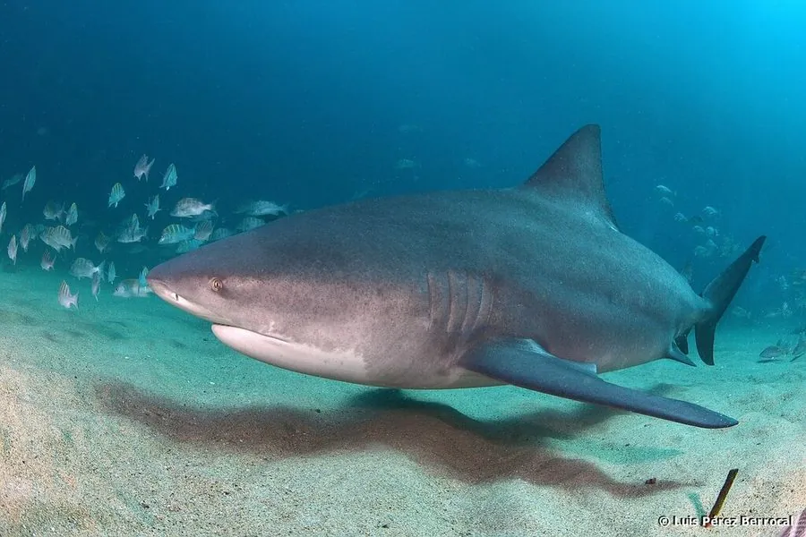

鱼类 · 动物界
公牛鲨 Carcharhinus leucas

能进入淡水河流的大型真鲨，体形粗壮、吻短而钝，性情凶猛，是少数在河口与河湖中长时间生活的鲨鱼，分布于全球温暖海域。
- 分类
- 门脊索动物门纲软骨鱼纲目真鲨目科真鲨科属真鲨属
- 栖息环境
- 河口、潟湖、红树林、浑水河道与近岸浅海，可深入淡水河流与湖泊
- 地理分布
- 全球热带与亚热带海域及大河河口，包括亚马逊河、密西西比河与恒河下游
- 保护级别
- IUCN 易危（VU）；CITES 附录Ⅱ
物种志
公牛鲨体形粗壮厚实，成年体长 2.0–3.0 米，最大可超过 3.5 米，雌性明显大于雄性，体重 90–230 千克。背侧灰褐至深灰，腹面白色，背鳍与尾鳍边缘略深，第一背鳍宽大呈三角形；吻部短而钝圆，眼小，牙呈宽三角形且具锯齿。它的体形比同体长的其他真鲨更“敦实”，因此得名“公牛鲨”。
公牛鲨广布于全球热带与亚热带海域，并能沿河口进入淡水河流、湖泊，最远可深入内陆数百千米，是少数能在淡水中长期生活的鲨鱼。它栖息于河口、潟湖、红树林与浑水河道，靠敏锐的嗅觉与电感受器在浑浊水中捕食鱼类、鳐类、龟、海豚、甲壳类甚至陆上动物。胎生，每胎 1–13 尾，妊娠期约 10–11 个月。由于性情强势、体型大，它是少数会主动攻击人类的鲨鱼之一，近岸捕捞与栖息地退化使其种群下降。
形态与习性
- 体长约 2.0–3.0 m，最大可超过 3.5 m
- 体重约 90–230 kg，雌性大于雄性
- 食性鱼类、鳐类、龟、海豚、甲壳类甚至陆上动物
- 繁殖胎生，每胎 1–13 尾，妊娠期约 10–11 个月
- 耐低盐能力可沿河口深入内陆数百千米，在淡水中长期生活
- 感知嗅觉与电感受器灵敏，可在浑浊水中定位猎物
- 寿命约 25–30 年
趣味知识
- 公牛鲨能顺着大河游进内陆，亚马逊河上游数百千米处都有它的记录。
- 它体形敦实、吻部短钝，看上去像一头水里的公牛。
- 它是少数被确认会主动攻击人类的鲨鱼之一，在浑水中尤其危险。